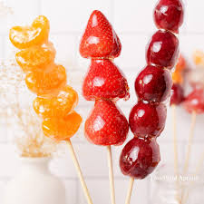
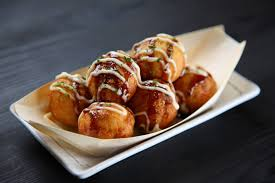
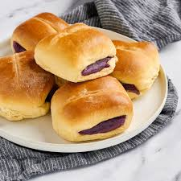
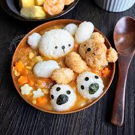
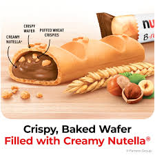
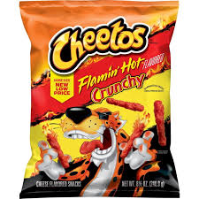
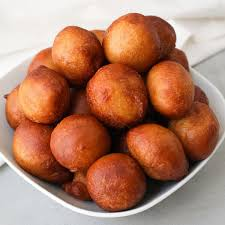

Welcome to my Website
Navigation
Next Page
Page 3
Page 4
Page 5
Page 6
Page 7
Hello, My name is Victoria. Welcome to my website.
This website is about my favorite things
I like to eat snacks (NOT ALL THE TIME)specifically the ones in the pictures
- Tanghulu: a traditional Chinese candied fruit snack made by skewering fruits, traditionally hawthorn berries, and coating them in a hard, crunchy sugar glaze.

- Takoyaki:a popular Japanese street food of savory, ball-shaped dumplings made from a wheat flour-based batter, typically filled with diced octopus, tempura scraps, and green onion

- Ube bread: a soft, sweet Filipino pastry made from purple yam (ube), often featuring a vibrant purple, pillowy, and tender crumb

- Onigiri: Japanese rice balls, often triangular or cylindrical, made from steamed rice, typically with a savory filling like salted salmon, pickled plum (umeboshi), or tuna mayo, and usually wrapped in nori (seaweed).

- Nutella B- Ready: an individually wrapped, baguette-shaped crispy wafer snack filled with creamy Nutella hazelnut spread and sprinkled with puffed wheat crispies

- Hot Cheetos are a popular, intensely spicy cheese-flavored corn snack manufactured by Frito-Lay, known for their bright red color, crunchy or puffy texture, and signature chili-lime heat.

- Puff-puff is a popular West African deep-fried dough snack, known for its light, airy texture, golden-brown crispy exterior, and sweet, spiced flavor.>
